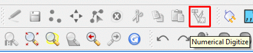
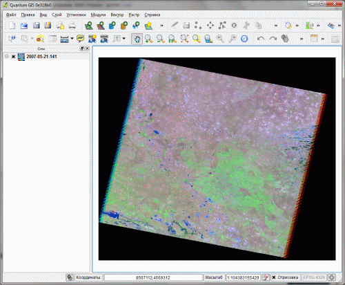
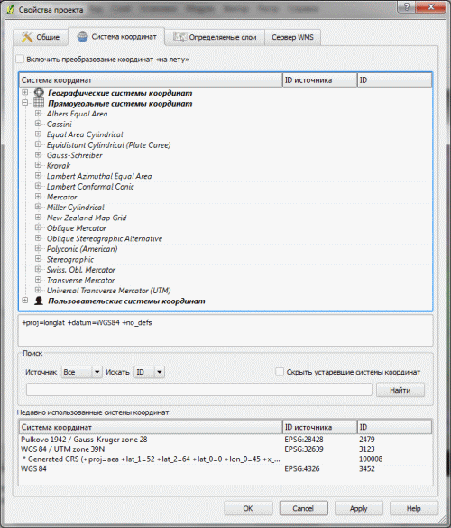
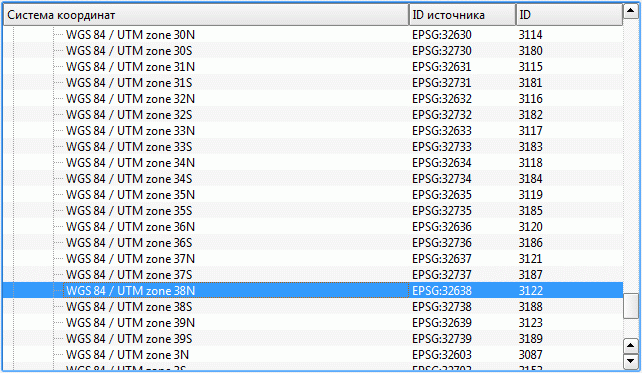
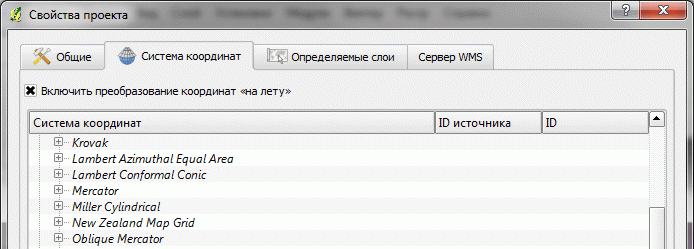
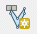
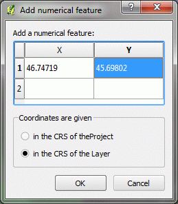
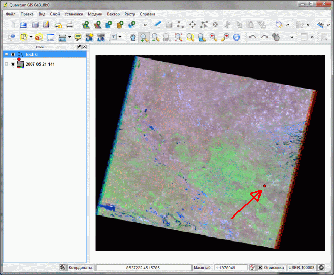
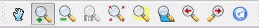
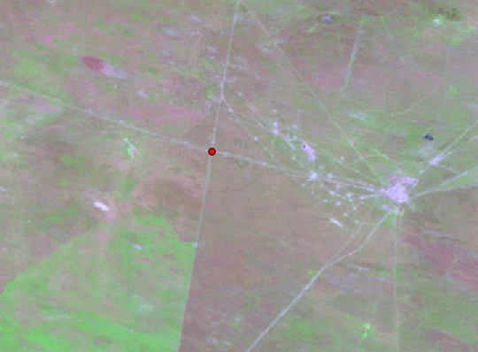

Как найти и создать точку с известными координатами в QGIS
Есть снимок и точка GPS, как найти точку на снимке
Перед людьми выезжающим в поле и имеющим с собой GPS и ноутбук часто стоит задача открыть проект с какими-то данными в QGIS и нанести в нем точку с известными координатами.
Эта статья - пособие для новичков в ГИС, объясняющая как решить данную конкретную задачу. Подразумевается что QGIS у читателя уже установлен, если это не так - установите его используя подробное описание как это сделать.
1. Подготовка к работе
Перед началом работы нужно также установить расширение которое называется NumericalDigitize.
Если вы не знаете как устанавливать модули, ознакомьтесь со статьей "Установка модулей расширения в QGIS".
После установки на панели инструментов редактирования появится новая кнопка (выделена красным на рисунке ниже).

Возможна ситуация, когда панель показывается не полностью и кнопка, добавляющаяся в самый ее конец просто не видна - нажмите на >> или перетащите панель на новую строку так, чтобы она была видна целиком.
Так как проект пока пустой - кнопка не активна.
2. Подготовка рабочего проекта
Настройки данных, расширений (но не сами данные!) в QGIS хранятся в проекте. Проект представляет собой файл с расширением QGS. Новый чистый проект автоматически создается при запуске программы, но он не сохраняется, поэтому выберем Файл\Сохранить проект как... и укажем где будет лежать проект.
В дальнейшем нужно не забывать периодически сохранять проект (Файл\Сохранить проект) и начинать работу не с нового, а с созданного. Для этого нужно либо вызывать проект через запуск его файла, либо выбором в меню программы Файл\Открыть проект.
3. Подготовка подложки
Загрузим слой или слои представляющих собой некое географическое окружение точки. Это могут быть космические снимки или карты. В зависимости от формата данных это могут быть растровые (Слой\Добавить растровый слой...) или векторные данные (Слой\Добавить векторный слой...) .
У нас в качестве подложки выступит снимок, поэтому выберем Слой\Добавить растровый слой... и найдем файл со снимком.

4. Подготовка рабочего точечного слоя
Создаваемые точки мы хотим сохранить на будущее поэтому нам нужно создать для них новый слой - контейнер в котором они будут храниться.
Для создания слоя выберите Слой\Создать\Создать новый shape-файл.
В открывшемся окне просто нажмите ОК и выберите куда сохранить слой и как его назвать. После этого он появится в списке слоёв поверх снимка.
5. Установка общей системы координат проекта
Так как точки мы будем брать с GPS, где они находятся в одной системе координат, а снимок находится в другой, необходимо указать в проекте общую систему координат. Для этого нужно сначала ее определить по снимку (рабочей системой координат у нас будет система координат снимка). Для этого выберем из меню Растр\Информация и нажмем ОК.

В пункте PROJCS обозначена система координат снимка - это UTM зона 38.
Теперь выясненную систему координат надо назначить проекту. Выберем: Установки\Свойства проекта\Система координат.
В списке проекций выберем Прямоугольные системы координат\Universal Transverse Mercator\

И в списке пролистаем до

Эта система координат равна системе координат снимка и ее мы и будем использовать как рабочую в этом проекте. Все векторные слои (в том числе наши точки) будут автоматически переводиться в эту систему координат и накладываться на снимок.
Последнее что осталось сделать - включить режим автоматического перевода новых точек в рабочую систему координат. Это делается установкой флажка Включить преобразование на лету.

Нажмите ОК чтобы применить новые настройки и сохраните проект.
Подготовка завершена, можно начинать использовать созданный проект по назначению.
6. Создание точек
Итак вы выехали в поле, включили приемник GPS, получили свои координаты, открыли проект со снимком и готовы к тому, чтобы точно определить, где же вы на нем находитесь. Чтобы добавить свою точку, нужно выполнить следующую последовательность действий:
- Выбрать слой с точками щелкнув по нему один раз (он может быть уже выбран)
- Выбрать из меню Слой\Режим редактирования - это позволит начать добавлять объекты в слой
- Щелкнуть на ставшую активной кнопку NumericalDigitize 
- Ввести координаты с GPS, долготу в X, широту в Y и выбрать переключатель in the CRS of the Layer.
 - Нажать ОК и еще раз выбрать Слой\Режим редактирования для сохранения изменений в слое.
Точка должна появиться на снимке.

Теперь осталось только освоить инструменты навигации чтобы научиться увеличивать нужный кусок снимка и возвращаться к исходному охвату. Эти инструменты выглядят следующим образом:

Используя такую систему, вы никогда не потеряетесь и получите массу полезной информации прямо в поле.

7. Самостоятельная работа
Если вы еще не в поле, но собираетесь и хотите потестировать такой подход вы можете использовать вот этот снимок и точку 46.74719,45.69802 (долгота, широта). У вас должен получиться точно такой же результат как и на рисунке выше.
Ссылки по теме
Дата создания: 05.06.2011
Автор(ы): Максим Дубинин